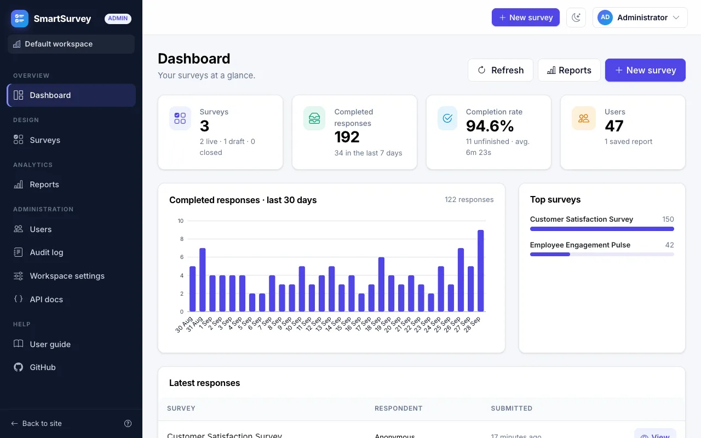
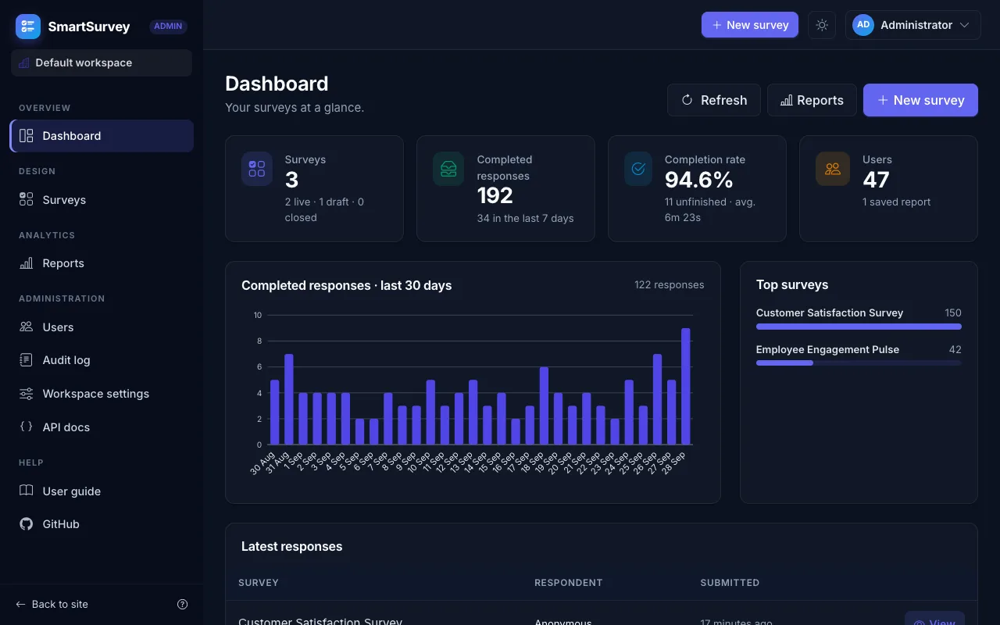
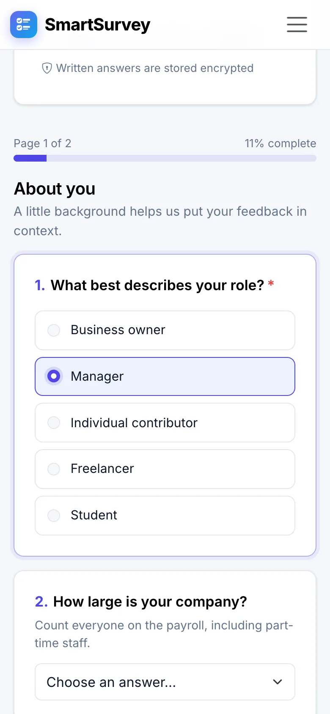

10 question types
Short and long text, single and multiple choice, dropdowns, numbers, e-mail, dates, star ratings and scales — with “Other → free text” options.
SmartSurvey is a self-hosted survey platform. Build surveys with conditional logic, collect responses on any device and turn them into clear reports — ready to export as PDF, Excel or CSV.



Everything happens in one place: no spreadsheets, no copy and paste, no second tool for the charts.
Add pages and questions, set the rules and preview the survey exactly as respondents will see it — before a single person answers.
Respondents get a clean, mobile-friendly page that only asks what applies to them and tells them right away when something is missing.
Generate an overview report with one click, then shape it with the report builder. Charts and tables always show the live data.
Workspaces keep the surveys, responses and reports of every team, class or client apart — on a single installation that you control.
No plans, no locked features and no per-response pricing. What you install is the whole product.
Short and long text, single and multiple choice, dropdowns, numbers, e-mail, dates, star ratings and scales — with “Other → free text” options.
Show or hide questions and whole pages based on earlier answers. Evaluated live in the browser and checked again on the server.
Split long surveys into pages with a progress bar, per-page validation and a thank-you page at the end.
Ten widget types — KPIs, charts, cross-tabs, NPS, text answers and raw grids — with filters and a live preview.
Download reports as PDF, Excel, CSV, plain text or JSON, and the raw responses as CSV, Excel or JSON.
New workspaces start with three ready-made surveys. Duplicate any survey, or move one between installations as JSON.
One installation hosts many fully isolated workspaces. Anyone can create one — with approval, if you prefer.
Set the product name, the tagline and your own logo for the whole site, with a live preview.
Every page is responsive and has a dark mode. Surveys are comfortable to answer on a phone.
Every capability is available over /api/v1 with bearer tokens, Swagger and ProblemDetails errors.
Step-by-step help in plain language inside the app, for respondents and for administrators.
People change their name, e-mail and password themselves, and can download or delete their personal data.
SmartSurvey runs on your own server, so what people tell you stays with you — protected in the database, in the browser and on the way in.
Read the security chapterWritten answers, “Other” texts and browser details are encrypted in the database with AES-256. The keys are kept outside the database.
Isolation is enforced in the data layer. Super admins manage workspaces, but cannot open their surveys, answers or reports.
A proof-of-work challenge, a minimum answering time, a honeypot field and rate limits — without a CAPTCHA or a third-party service.
Works with any authenticator app and comes with recovery codes. Accounts are locked after repeated failed sign-ins.
Every survey design and every answer is validated on the server, and the conditional logic is evaluated there again.
Each workspace has its own audit log. Super admin actions and sign-ups are recorded in a separate one.
Three roles, each with exactly the pages it needs.
Answer in a couple of minutes, on any device.
Run the surveys of a team, a class or a company.
Look after the whole installation from the System console.
Taken from a fresh demo instance. Select a picture to enlarge it.
The Docker stack contains the web app and a PostgreSQL 16 database. Your data is kept in Docker volumes and survives restarts.
Docker Desktop on Windows and macOS, or Docker Engine with the Compose plugin on Linux.
Three commands. The first start takes a few minutes, later starts take seconds.
The demo data gives you example surveys, about 200 responses and a sample report to explore.
git clone https://github.com/supunsarachitha/SmartSurvay.git
cd SmartSurvay
docker compose up -d --build
# then open http://localhost:8080| Workspace admin | admin@smartsurvey.local |
|---|---|
| Super admin | superadmin@smartsurvey.local |
| Password | ChangeMe123! |
Change both passwords right after signing in, or set ADMIN_PASSWORD and SUPERADMIN_PASSWORD in .env before the first start. Going live? Follow the deployment checklist.
No. SmartSurvey is self-hosted: you run it on your own computer or server, and your data stays there. With Docker that is a single command.
Only Docker. The stack contains the web app and a PostgreSQL 16 database. Without Docker you need the .NET 10 SDK and PostgreSQL 16 — or SQLite for a quick demo. See Getting started.
SmartSurvey is free for personal use, study, research, hobby projects and non-commercial organisations such as charities, schools and public institutions. Commercial use needs a separate licence from the repository owner — get in touch via GitHub. The details are in the PolyForm Noncommercial License 1.0.0.
Not always. Each survey decides whether anonymous answers are allowed. Surveys that require an account are for the members of the workspace that runs them, who join with the workspace’s join link.
Yes. Each team gets its own workspace with its own admins, members, surveys, responses and reports. Workspaces are completely separate, and even super admins cannot open a workspace’s content.
Back up the database together with the keys volume: it holds the keys that decrypt the written answers. To update, run git pull && docker compose up -d --build; database migrations are applied when the app starts. See Deployment.
Yes. Everything the user interface does is available over /api/v1 with bearer tokens, documented with Swagger. See REST API.
Install SmartSurvey with one command and publish your first survey today.
Free for non-commercial use under the PolyForm Noncommercial License 1.0.0. Commercial use needs a separate licence.